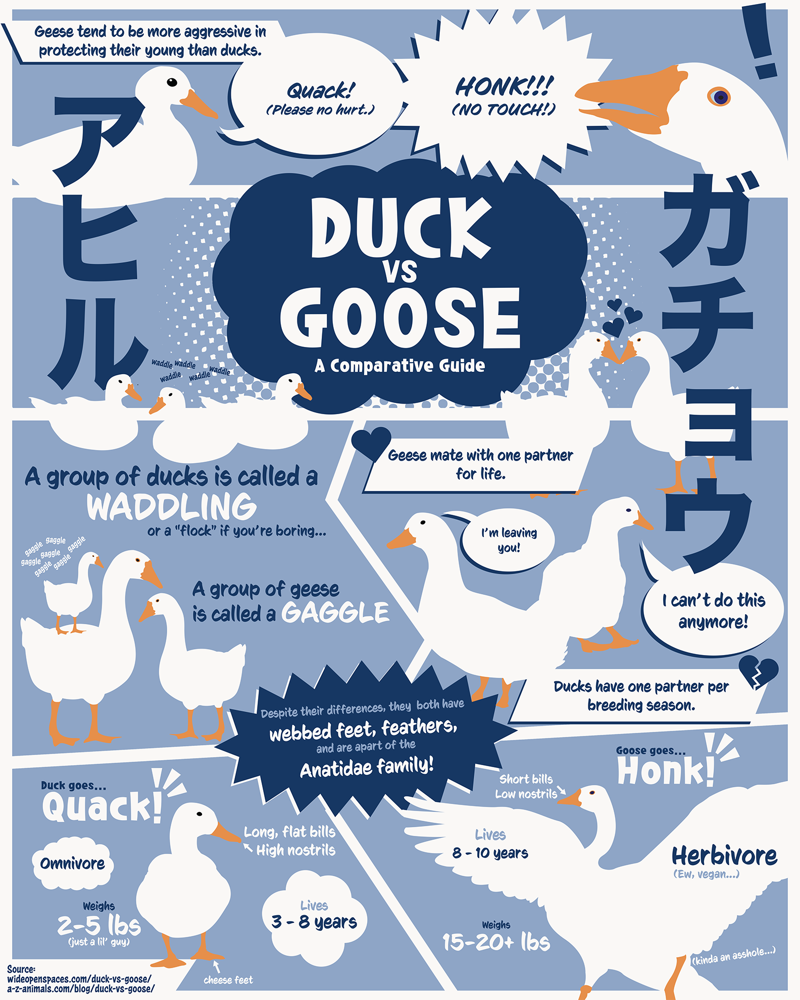

Duck Vs. Goose
The battle of the ages...
Duck vs. Goose was an infographic poster I designed to highlight comparisons between ducks and geese. I was mainly inspired by comics and manga that utilized halftones. I was challenged to make the infographic both engaging and easy to follow. Therefore, the comic book panel-by-panel format was my solution.